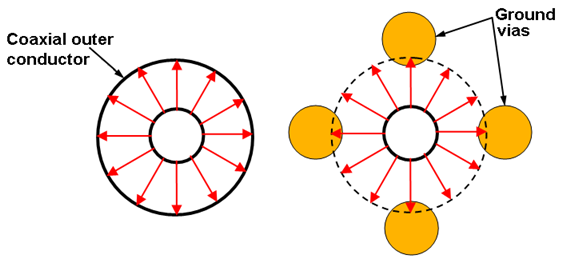
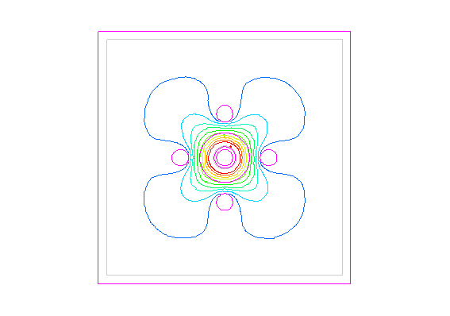
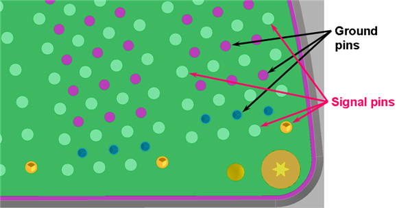
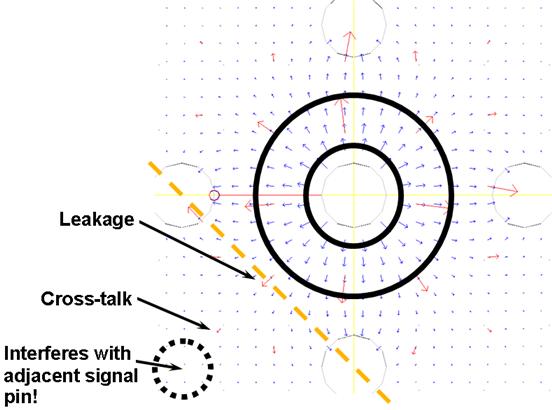
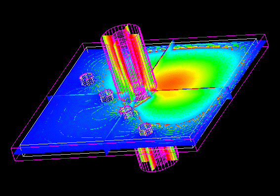
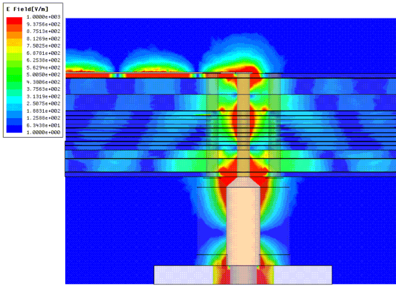
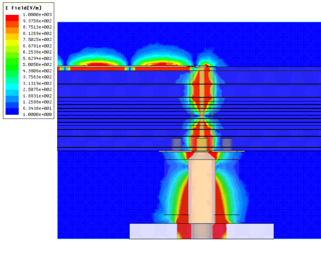
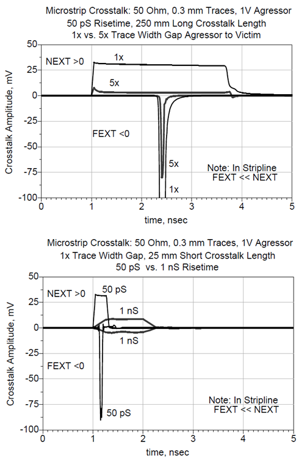

Leakage and crosstalk of RF signals
Leakage
In coaxial lines, RF signals are very well shielded and fully contained with excellent signal integrity (SI). However, in the PCB boards - for electrical or even for simple mechanical reasons - that full containment often cannot be achieved. If shielding is not 100%, the signal trace may lose some smaller portion of its power alongside the PCB trace. This portion gets separated from the original signal and starts propagating in a different route. This phenomena is called leakage. Signals with higher power levels are especially critical because even their very small sized leakage - in terms of their percentage - might be comparable to, or even much larger than, some really sensitive small RF or analog signals within vicinity in the PCB.
High-frequency vertical signal vias, also called controlled RF vias, are especially vulnerable traces in PCBs. Instead of a full metal shield, as provided by the outer conductor of a coaxial cable, the best option for vertical signal vias are vertical ground vias. For practical mechanical reasons you can place only a limited number of ground vias around a center signal via. Advantest recommends the four-grounding RF Interlayer via-structure. Four ground vias are the minimum to adequately cover operating frequencies up to multiple GHz.

Transverse Electric and Magnetic (TEM) propagation
Using a 3D ElectroMagnetic simulator tool, you can animate the equipotential circles of the electric field in the TEM (Transverse Electric and Magnetic) propagation. The red circle right around the signal via in the center represents the maximum signal level (0 dBc). Each of the subsequent variations of pink, okker, yellow, green, and finally blue, represent an additional -5dBc power level drop relative to the previous signal level. In the example shown below, the leakage of the signal via adds up to approximately -45 dBc (blue trace).

In the example graphic above the cross-sectional view of the via is placed in a metal box enclosure. If matched boundary conditions would be assigned at the frame instead, the leaking portion of the signal would actually break off and float away in the directions of the four diagonal corners.
Crosstalk
ATE testers and their PCB boards usually have dozens of these vias close to each other. Just consider the DUT through-board RF vias underneath, or nearby, the device itself.
For visual simplicity, consider a single pogo block as an example, where the outer signal pins are not surrounded by ground pins:

In the graphic below, at the yellow dotted line, half-way between the two ground vias, a small red arrow represents signal leakage. Although the signal loses power strength as it travels away from the signal pin/via, eventually it injects into the neighboring signal pin/via. This phenomena is called crosstalk.

If ground pogo pins, or ground vias inside the board, are missing - the signal integrity of the structure is further compromised.
Using a 3D ElectroMagnetic simulator tool, you can analyze the strength of the electric field at each internal location of the pogo (controlled RF via) structure.

Effect of crosstalk in the board
The likelihood of crosstalk increases when signal lines are routed parallel to each other for an extended distance. This can be both a horizontal routing (inside board layers) or a vertical routing (controlled RF vias or uncontrolled other vias).
A signal may also leak into the board layers at one location, traveling uncontrolled for some distance, before it leaks into an inadequately protected other signal somewhere else on the board. (Note that the example below does not show this second leakage.)

By reducing the distance between the signal via and the ground vias (as in the graphic below), you reduce the vulnerability towards leakage and thus minimize the chances for crosstalk.

NEXT and FEXT
Near-End Crosstalk (NEXT): |
With a signal input in the first of two parallel board lines, NEXT is an induced signal that travels backwards (towards input) in the second line. |
Far-End Crosstalk (FEXT): |
With a signal input in the first of two parallel board lines, FEXT is an induced signal that travels forwards (towards output) in the second line. |
The first line, which gets the input signal is called the aggressor line, and the second line, which gets the signal induced in by crosstalk, is called the victim line.
When evaluating the NEXT and FEXT in a board, one powerful method is TDR (Time-domain reflectometry).
Example
This example uses a fast rising edge aggressor signal to measure the two crosstalk values. NEXT has the same phase and FEXT has the 180 degree shifted (opposite) phase. The graphic shows typical microstrip NEXT and FEXT data:

Functional changes
- Introduced in SmarTest 6.5.3